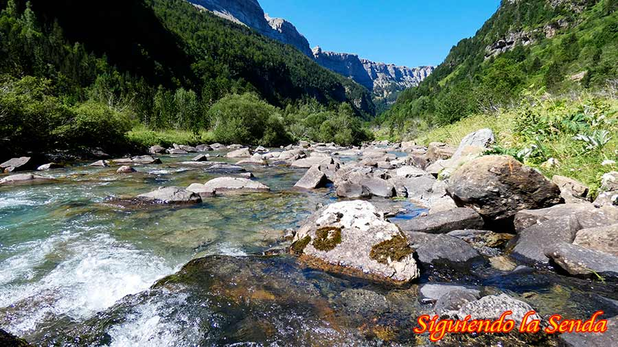
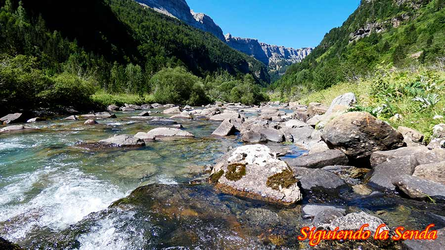

-
Nombre: 01 PRADERA DE ORDESA
Posicion: 42.649523, -0.059637 - 1314.3 m
-
Nombre: 02 APARCAMIENTO,
Posicion: 42.649403, -0.058981 - 1315.0 m
-
Nombre: 03 CARTÉL INFORMATIVO
Posicion: 42.649242, -0.057599 - 1317.4 m
-
Nombre: 04 EL PILAR, SEGUIR POR LA DERECHA
Posicion: 42.648769, -0.051012 - 1327.6 m
-
Nombre: 05, NO CRUZAR EL PUENTE DE SARRATIETO
Posicion: 42.646029, -0.044932 - 1339.5 m
-
Nombre: 08 CASCADA
Posicion: 42.640708, -0.034946 - 1402.4 m
-
Nombre: 09 PUENTE
Posicion: 42.640679, -0.034855 - 1402.5 m
-
Nombre: 11, DERECHA, HACIA CASCADA DE ARRIPAS
Posicion: 42.639378, -0.032460 - 1408.5 m
-
Nombre: 12 CASCADA DE ARRIPAS
Posicion: 42.639093, -0.032112 - 1404.2 m
-
Nombre: 12, Desvío cascada Cueva y Estrecho
Posicion: 42.638252, -0.030711 - 1453.0 m
-
Nombre: 13, Desvío Cascada de la Cueva
Posicion: 42.637645, -0.030368 - 1452.9 m
-
Nombre: 14, Cascada de la Cueva
Posicion: 42.637265, -0.030354 - 1441.3 m
-
Nombre: 15, Cascada Estrecho
Posicion: 42.636882, -0.029797 - 1462.5 m
-
Nombre: 17, Parte Alta de la Cascada del Estrecho
Posicion: 42.635727, -0.027745 - 1539.3 m
-
Nombre: 18, Bosque de las Hayas
Posicion: 42.636187, -0.026168 - 1573.4 m
-
Nombre: 21, CASCADA
Posicion: 42.635140, -0.013238 - 1661.2 m
-
Nombre: 22, ABRIGO
Posicion: 42.635708, -0.009248 - 1660.1 m
-
Nombre: 23, Fuente Gradas Soaso
Posicion: 42.637692, -0.002478 - 1684.5 m
-
Nombre: 24, Gradas Soaso
Posicion: 42.638126, 0.000290 - 1706.0 m
-
Nombre: 25, IZQUIERDA,
Posicion: 42.639149, 0.001874 - 1735.0 m
-
Nombre: 26, Circo de Soaso
Posicion: 42.639514, 0.002556 - 1737.8 m
-
Nombre: 27, PUENTE
Posicion: 42.641266, 0.005403 - 1737.3 m
-
Nombre: 28, PUENTE
Posicion: 42.641665, 0.006258 - 1739.0 m
-
Nombre: 29, CASCADA
Posicion: 42.642173, 0.006738 - 1742.9 m
-
Nombre: 30, PUENTE
Posicion: 42.642423, 0.007066 - 1744.6 m
-
Nombre: 31, REFUGIO DE SOASO,
Posicion: 42.642743, 0.007381 - 1746.2 m
-
Nombre: 32, CASCADA
Posicion: 42.643833, 0.008515 - 1744.2 m
-
Nombre: 33, COLA DE CABALLO
Posicion: 42.649846, 0.015568 - 1758.8 m
-
Nombre: 34, IZQUIERDA, PUENTE DE ARRIPAS
Posicion: 42.637853, -0.030720 - 1448.9 m
-
Nombre: 35, Puente de Arripas
Posicion: 42.637809, -0.031968 - 1415.1 m
-
Nombre: 36, Desvío Mirador de los Bucardos
Posicion: 42.637958, -0.032532 - 1414.6 m
-
Nombre: 38, 39, DESVÍO A CASCADA DE COTATUERO
Posicion: 42.645743, -0.045617 - 1339.9 m
-
Nombre: 40, Cascada de Cotatuero
Posicion: 42.646259, -0.045759 - 1338.3 m
-
Nombre: 41, Piedra de las Siete Faus
Posicion: 42.646809, -0.047896 - 1334.5 m
-
Nombre: 42, DERECHA, PUENTE DE LOS CAZADORES
Posicion: 42.647552, -0.055608 - 1320.7 m
-
Nombre: 43, Puente de los Cazadores
Posicion: 42.648190, -0.055912 - 1318.5 m
-
Nombre: 44, IZQUIERDA
Posicion: 42.648294, -0.055999 - 1318.9 m
 
